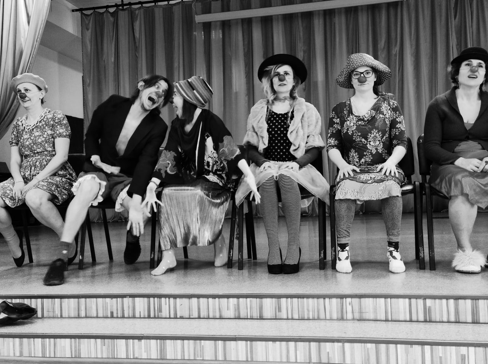
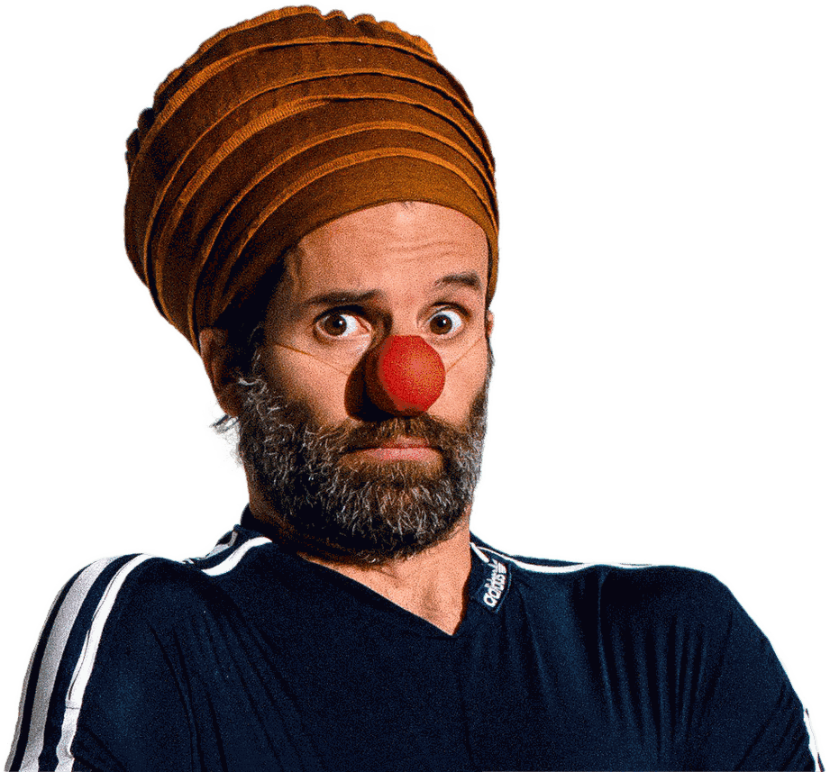

The smallest mask in the world
Be transformed by the clown nose — the mask that reveals rather than hides, and helps you show what is real in each moment.


Find your clown, learn how to play from the clown state, and have an audience baptism with the clown nose.
A Clown Is Born is a long-term journey into the world of clown through the smallest mask in the world — the red nose, which reveals what is true in each moment. It is both an artistic training and a deeply human process, where you will explore play, emotions, movement, presence, and contact with others and an audience.
For those of you who were eager to continue the journey with Pedro — we are starting another round of the program in November 2026.
Once a month, from November to March, the group meets for a full weekend of clown work. It is a slow, cumulative journey: your clown has time to appear between the modules, to be forgotten and found again, and to grow into something that is genuinely yours. The program closes with a clown baptism on stage, in front of a real audience.
Be transformed by the smallest mask in the world.
Be transformed by the clown nose — the mask that reveals rather than hides, and helps you show what is real in each moment.
Learn the fundamental clown games: mirroring, accepting, amplifying, resisting, insisting, learning and teaching.
Strengthen your ability to express yourself emotionally and playfully — not only in words, but with everything you have.
Unlock emotional channels that may be less developed in you — anger, fear, joy and sadness — and learn to play in each of them.
Laugh at yourself and find lightness in extreme situations. Making friends with mistakes and fuckups is at the heart of the craft.
Discover a clown drawn from your own personality traits — and explore totally new roles and forms of expressing yourself.
Align the conscious and thoughtful you with the vital energy of the animal you also are.
Explore the surrounding world your clown lives in — and learn how to let an audience inside it.
The program ends with a presentation in front of a real audience — the moment your clown is met by people who have never seen it before. This is what the whole journey has been building towards.
You will learn precise and detailed techniques of standing in front of an audience and making them laugh and feel something extra-ordinary.
You will learn how to work with breath, movement and contact in a way that produces expected responses in an audience.
You will deepen your capacity for authenticity, connection with others, vulnerability, joyful playfulness, sensitivity with your body wisdom and expression, self-confidence and spontaneous expression.
You will also weaken your self-censorship, your fear of deep contact, and the feeling of being stuck.
This is not your first step into clowning. To take part, you need at least one clown workshop behind you — ideally Being Before Doing with Pedro, but a workshop with another clown teacher counts just as well.
If you're not sure whether what you've done counts, just write to us — we'll figure it out together.
Always plan one extra hour. The days tend to run over, especially on the second day of each module — so keep the evening free rather than booking something straight after.
Pedro Fabião has spent years training hospital clowns and actors around the world — hospital clowning being a profession that runs almost entirely on sensitivity and empathy. For years he directed Operação Nariz Vermelho, Portugal's hospital clown organisation.
He is also a psychologist, trained in psychodrama. The two halves aren't kept in separate rooms. The work is helping people find and express what's actually in them, and go gently through whatever is in the way.
His approach is playful, embodied and based on humour. Which doesn't keep difficult emotions away — and when they arrive, the work is finding what lets you say yes to the experience, so that something can move.
Hospital clowning is a profession that runs almost entirely on sensitivity and empathy.
The whole program, in three steps.
€1,150 in total across the five modules.
If you cancel. The deposit is refundable only if someone else takes your place in the group.
Places are reserved with a deposit. Write to us to book your spot, or to ask anything at all about the program.